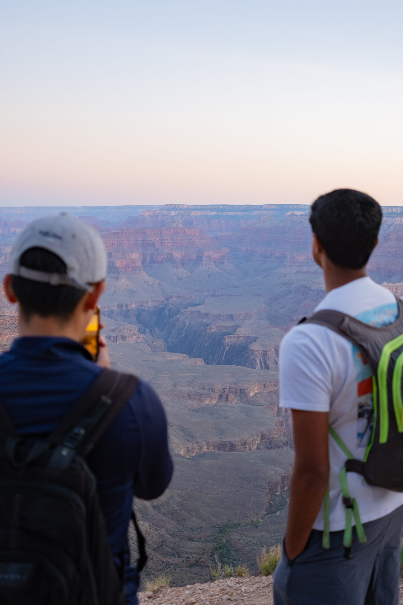
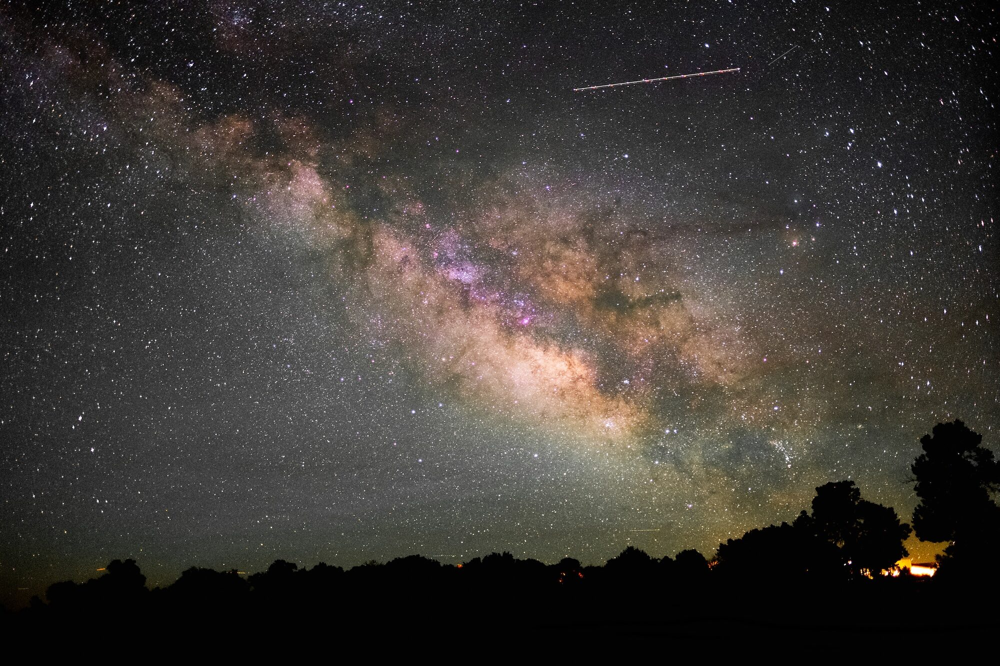
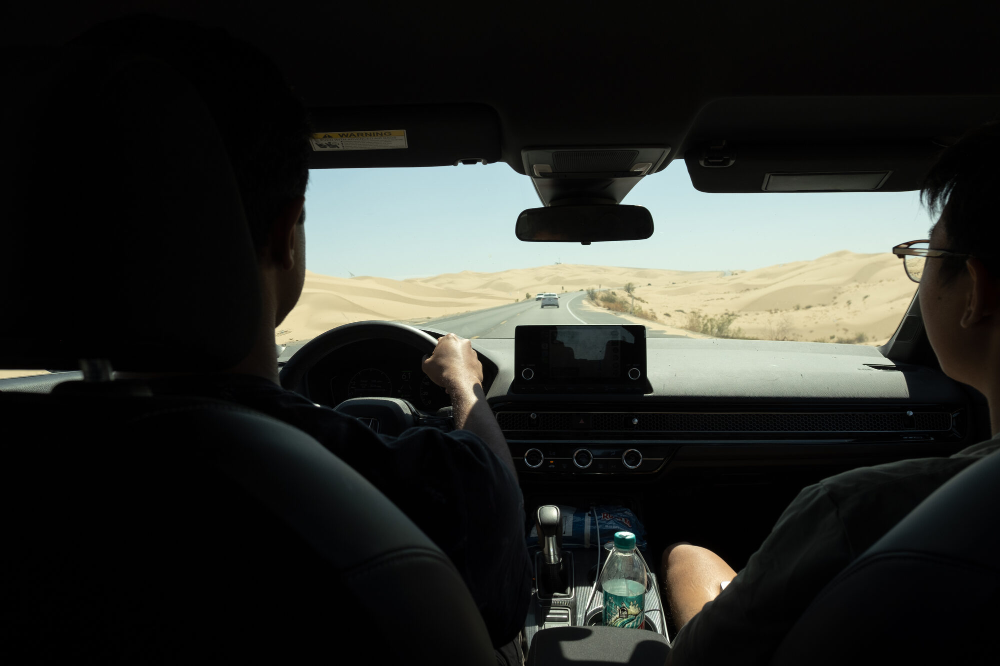

Grand Canyon, 2025
After graduating from college, my friends and I went on a short weekend trip to the Grand Canyon. It was great in that it was simple — we spent four days driving, hiking, riding bikes, and playing a lot of Catan.
I enjoy these sorts of trips. They pull you out of your everyday life and you are given a moment to better understand yourself and your friends outside of your usual environment.

Early morning hike on our first day. We caught the second bus out to the trailhead and got started just as the sun was rising. This was the first time we got a real view of the canyon.


The second day we spent biking along the rim of the canyon, seeing it from different vantage points. These were two of them. It was a hazy day, but I feel it added some depth to the landscape.

On our last night, we went to the most remote station we could get to and spent a few hours looking at the stars. It was very windy, especially near the edge of the canyon.
Astrophotography is interesting because a lot of the time you are working in near-complete darkness, feeling your way around your camera and using your intuition to line up a good shot. Tragically, my eyesight is not amazing, so even with glasses I couldn’t see the Milky Way very well. The only way I could really see what was out there was through long exposures on my camera. I really enjoy the process of positioning the camera, waiting ten seconds, and then seeing what it captured.

On the way back to San Diego, we passed through the Imperial Sand Dunes. They feel out of place, and the few minutes we spent driving through them were surreal.